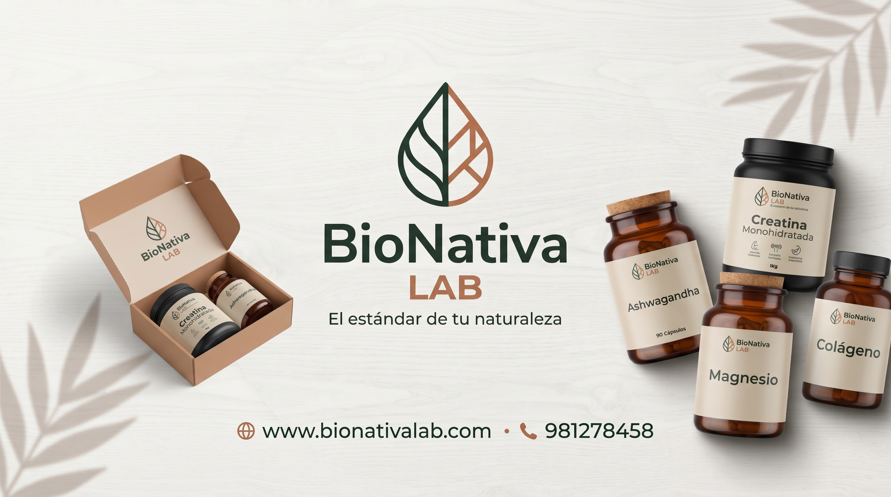
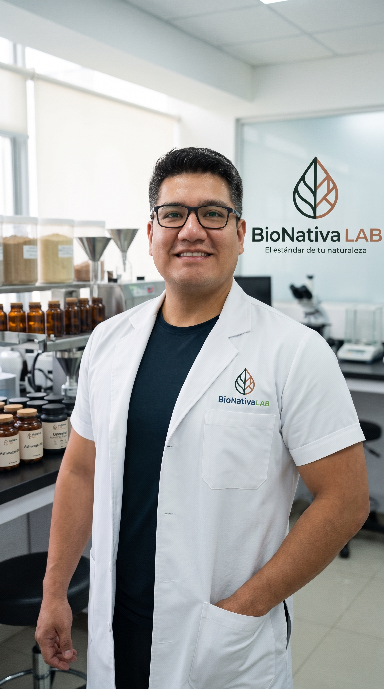
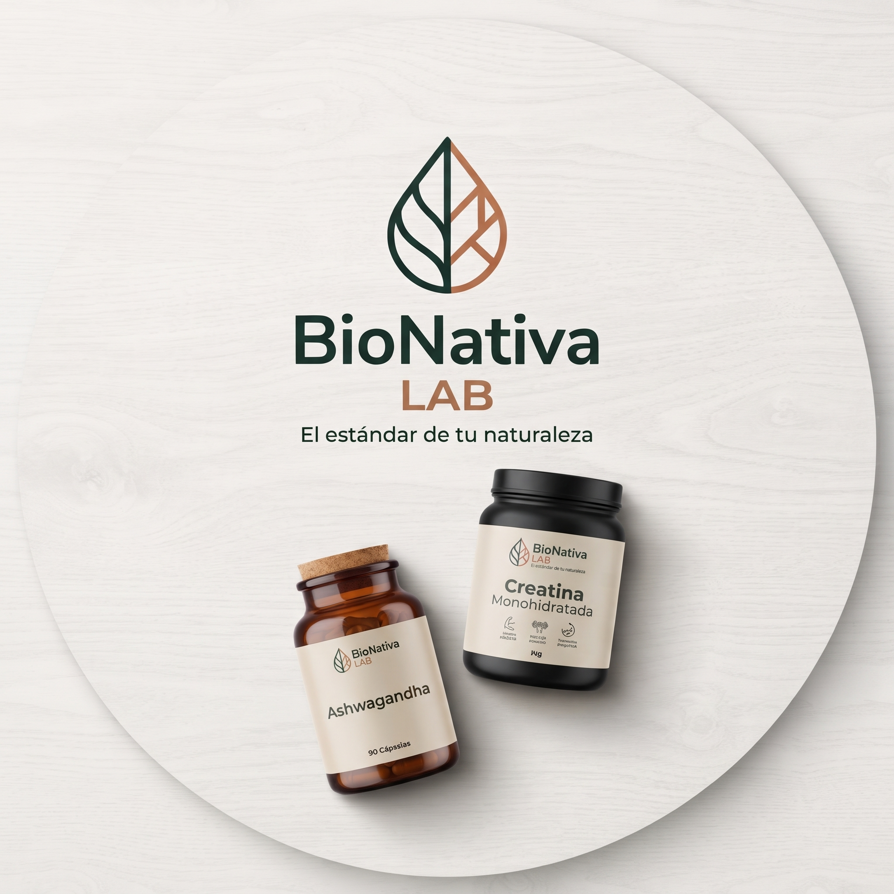
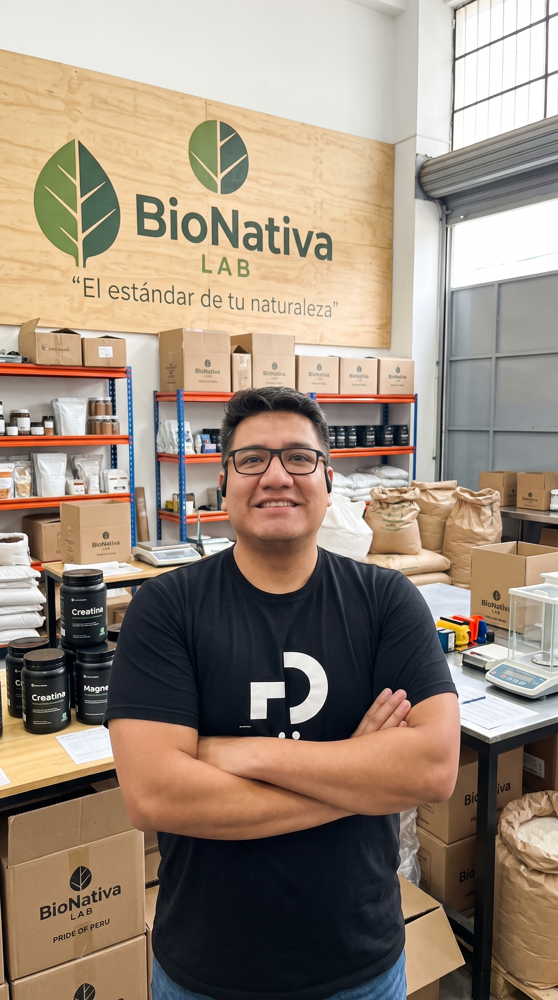
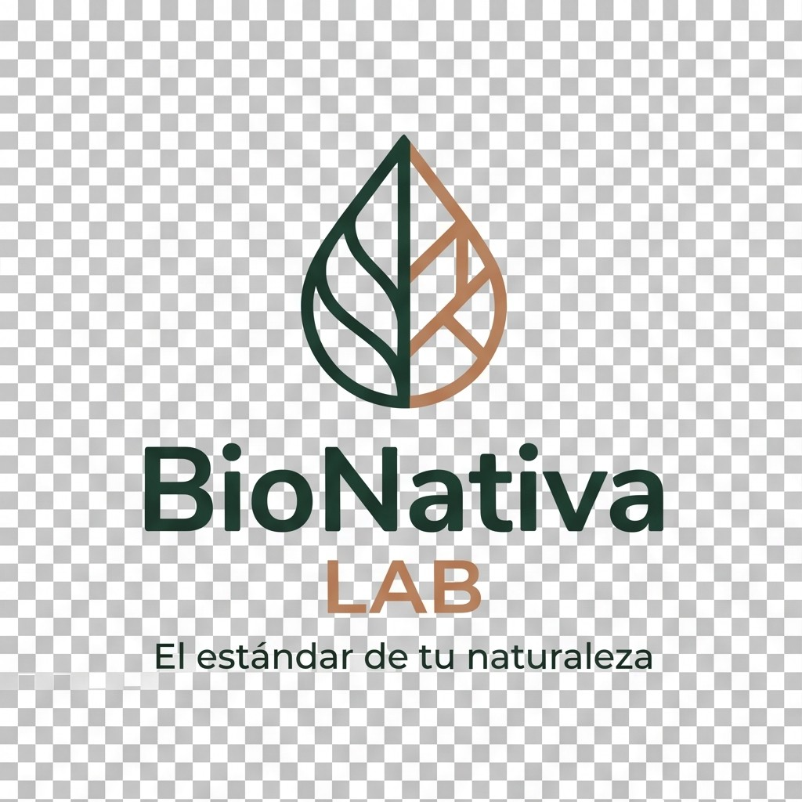

Una Respuesta Urgente a la Salud Moderna
Nacimos a partir de una profunda visión hacia el futuro de los alimentos orgánicos y la suplementación preventiva. En la actualidad, las personas buscan cuidar su salud como nunca antes; sin embargo, gran parte de los alimentos ultraprocesados y productos diluidos que circulan en el mercado generan inflamación celular, desórdenes metabólicos y enfermedades degenerativas graves.
Esta realidad encendió una convicción inquebrantable: mejorar la calidad de vida de las personas a nivel nacional e internacional, tomando al Cusco no solo como una tierra de historia, sino como el punto de eje geográfico y centro bio-diverso para la producción de productos naturales con estándar mundial.


De la Mano de Capitales Globales a una Dirección con 20 Años de Experiencia
Para convertir esta visión en infraestructura productiva real, se dio inicio a un proyecto de gran envergadura respaldado por capitales y tecnología de Israel y Estados Unidos. Con la exigencia de trabajar exclusivamente con personal de primer nivel, se convocó a nuestro fundador: Jorge de la Flor.
Contador de profesión con más de 20 años de experiencia comprobada en administración de plantas industriales, gestión financiera, logística compleja, construcción y metalmecánica, Jorge asumió la responsabilidad de estructurar desde cero la cadena operativa bajo la razón inicial de Pride of Peru S.R.L. (Pride of Peru Sociedad de Responsabilidad Limitada).
Expedición en el Terreno: La Revolución Tecnológica Apícola
En un tiempo récord y mediante un riguroso piloto nacional, recorrimos el Perú para convocar a los ponentes más calificados y a los mejores técnicos apícolas del país. Establecimos centros de desarrollo en zonas geográficas clave del Cusco y el sur peruano:
Pilcopata & Paucartambo
Penetración en selva alta y ceja de montaña, explorando la riqueza botánica amazónica para la producción apícola de floraciones vírgenes.
Challabamba & Yanatile
Rutas productivas en el valle paralelo a Quillabamba (entre Calca y Cayo 1), optimizando colmenas tecnificadas en pisos térmicos interandinos.
Curahuasi & Quiquijana
Zonas de floración estratégica andina, adaptación climática de apiarios y fortalecimiento genético de colonias de alta resistencia.
Tecnología Europea Tomasz Łysoń & Genética de Vanguardia
Para elevar el nivel de la apicultura peruana a estándares europeos, realizamos la importación directa de maquinaria y tecnología de Tomasz Łysoń (Polonia) —el mayor referente mundial en equipamiento apícola— complementada con tecnología de precisión de China.
- ✓ Carpintería apícola tecnificada: Implementación y venta de material de madera calibrado de alta durabilidad para colmenas.
- ✓ Mejoramiento genético nacional: Cría selectiva y producción de abejas reinas y núcleos fértiles sin núcleos a escala país.
- ✓ Mecanización de extracción: Extractoras de acero inoxidable quirúrgico y centrifugado estandarizado para mieles y derivados puros.

El Valor de Seguir Adelante: Nace Ecopride del Perú S.R.L.
Frente a coyunturas y tensiones políticas en el Congreso nacional, la inversión extranjera decidió retirarse del país. En ese momento crítico, muchos hubieran cerrado las puertas. Sin embargo, los directores locales de la compañía Pride of Peru, con Jorge de la Flor a la cabeza, decidieron no dar un paso atrás.
Así nació Ecopride del Perú S.R.L.: una empresa forjada con puro empuje cusqueño y nacional. Asumimos el liderazgo operativo, conservamos la tecnología de vanguardia y salimos adelante trabajando activamente tanto para el sector público como privado, tecnificando comunidades, suministrando infraestructura productiva y consolidando nuestra reputación en el mercado.



De la Colmena al Laboratorio: Nace BioNativa LAB
Consolidados como una empresa sólida en el sector natural y con una cadena logística de primer orden, dimos el paso definitivo de expansión: aplicar la misma rigurosidad técnica al desarrollo de suplementos nutricionales funcionales de grado farmacéutico bajo la marca BioNativa LAB.
Cada fórmula —desde nuestra Creatina Monohidratada micronizada 200 Mesh hasta adaptógenos como la Ashwagandha KSM-66 y Magnesio quelado— cuenta con respaldo de Certificados de Análisis (COA) por lote, garantizando 100% ingrediente activo sin excipientes ni maltodextrinas diluyentes.
Hoy puedes comprar directamente desde nuestra tienda digital con despacho veloz hasta la puerta de tu domicilio, pagando con tarjeta de crédito/débito o bajo la modalidad de Pago Contraentrega en las principales ciudades del país.
Más que Vender un Producto: Enseñar a Vivir con Salud
El valor diferencial de BioNativa LAB no termina en la entrega de un frasco. Nuestro compromiso central es educar a la población: formamos a los productores apícolas para que tecnifiquen sus cosechas con ética y sostenibilidad, y brindamos a las familias peruanas el conocimiento científico necesario para que aprendan a leer etiquetas, reconozcan la calidad de un nutriente y transformen su salud antes de enfermar.
¿Por Qué Elegir Materia Prima Pura?
La gran mayoría de marcas comerciales abaratan sus botes diluyendo el principio activo con azúcares y saborizantes.
- ✕ 40% a 60% del contenido es maltodextrina, celulosa y almidones.
- ✕ Saborizantes artificiales, colorantes sintéticos y edulcorantes químicos.
- ✕ Precios inflados por campañas masivas de publicidad sin valor nutricional.
- ✕ Sin acceso a certificados analíticos de pureza (COA).
- ✓ 100% Ingrediente Activo Puro: Pagas por nutriente real, sin rellenos ni aditivos.
- ✓ Materia Prima Certificada: Grado Farmacéutico y USP de máxima bioasimilación.
- ✓ Certificado COA por Lote: Verificación estricta de pureza libre de metales pesados.
- ✓ Formato Ahorro & Máximo Rendimiento: Al costo más justo del Perú con entrega contraentrega.
Desde la Ciudad Imperial de Cusco y Lima hacia Todo el País
Operamos con centros estratégicos de despacho en Cusco y Lima Metropolitana, facilitando entregas inmediatas a domicilio, pago contraentrega y envíos diarios a provincias por Shalom y Marvisur.